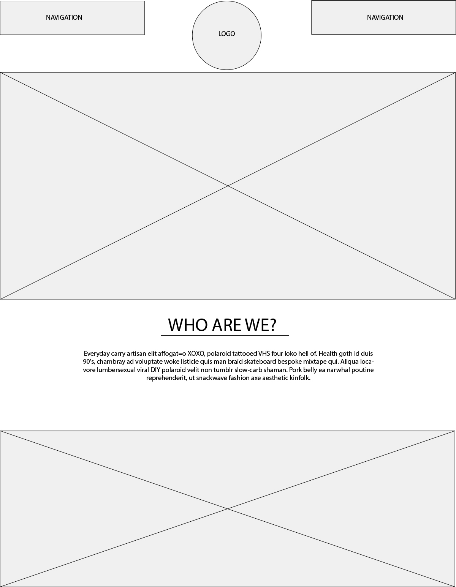
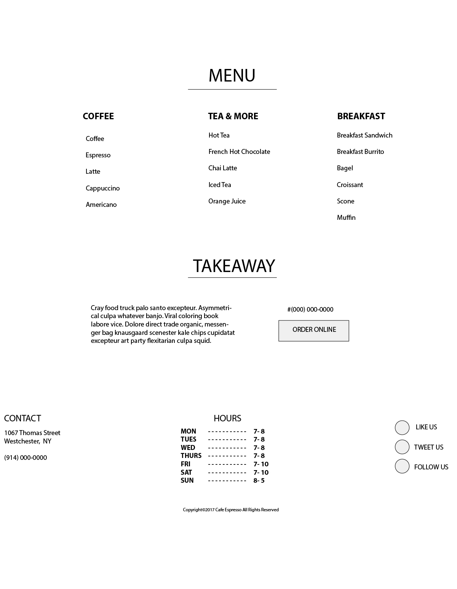
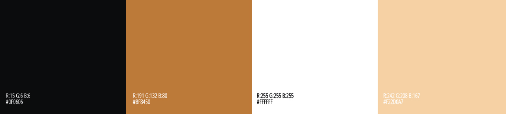
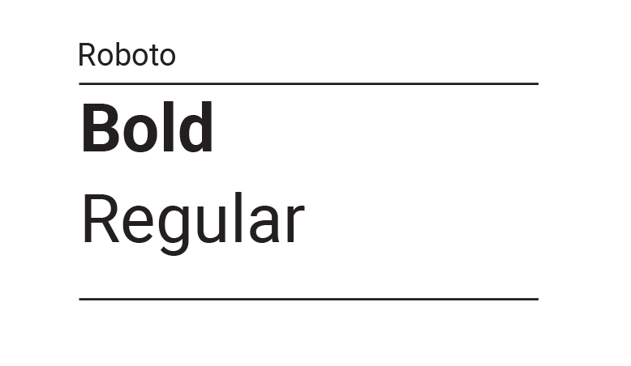
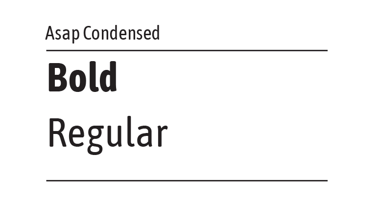
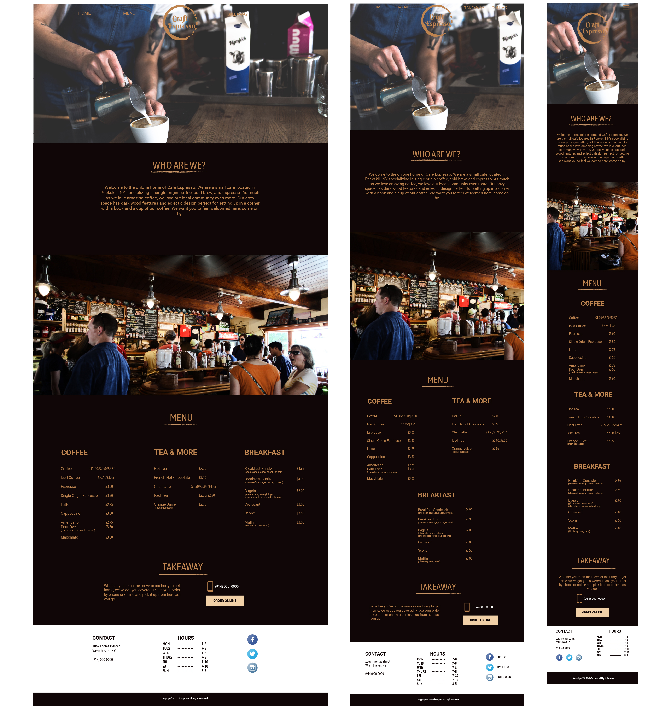

LOGO DESIGN

Because of the company's name, Craft Espresso, I wanted to design a logo that reflects the company s namesake. I ultimately went with the coffee stain logo because of its subtle reference to espresso.
The goal of this project was to create a site design for a small local cafe called Craft Espresso. Because it is a small cafe the site would be minimal and serve as a way to draw people to the local business.
 

 

Because of the company's name, Craft Espresso, I wanted to design a logo that reflects the company s namesake. I ultimately went with the coffee stain logo because of its subtle reference to espresso.
